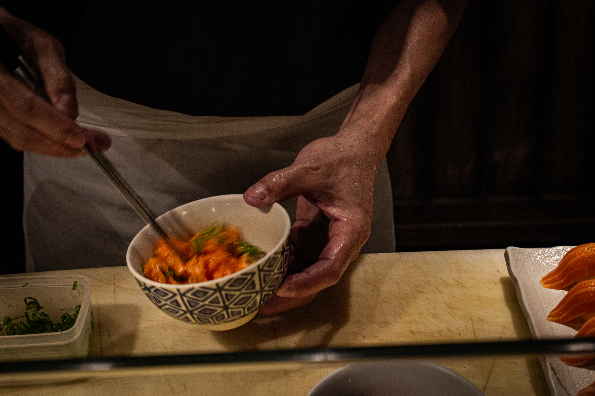

O princípio de atendimento do Kidoairaku se diferencia da maioria dos restaurantes comuns por conta do omotenashi. Essa expressão refere-se à hospitalidade de um estabelecimento e ao foco total na experiência do cliente. Os atendentes são cordiais e atendem em diferentes línguas, seja o português, japonês ou inglês; eles também estão sempre atentos às necessidades do visitante, reduzindo o tempo de espera entre os pedidos.
Quem escolhe sentar-se no balcão é agraciado com um show gastronômico que o sushiman dá a cada prato preparado: a precisão e conhecimento com que as técnicas são aplicadas impressionam até quem entende do assunto. Além dessa visão privilegiada, é possível escolher entre as mesas comuns ou as mesas baixas, em que o cliente senta em uma almofada no chão e faz a refeição desta maneira.
A experiência ao conhecer o Kidoairaku é única; os preços são mais altos em comparação com restaurantes japoneses comuns, mas o valor despendido é atribuído à experiência diferenciada e aos bons ingredientes do cardápio.
Juubaku
Os juubakus são uma versão do típico obento, a marmita japonesa com comidas do dia a dia. Os pratos do cardápio são variados, dos mais comuns aos mais difíceis de serem encontrados, para agradar a diversos paladares e curiosidades.
Alguns anos atrás, os preços do restaurante eram mais baratos porque faziam comidas mais populares e simples de serem preparadas. Essa situação mudou com o conceito de melhorar o atendimento e elevar a cozinha a outro nível.
Hiroka e Mário contam que, antigamente, a maior parte dos clientes era de origem ou ascendência japonesa; hoje, esse padrão mudou e os brasileiros são os que mais frequentam o Kidoairaku. Ainda, há os clientes fregueses que toda semana ‘batem ponto’ no restaurante e, assim, criam uma relação de amizade com os donos.
Alguns dos pratos servidos são: juubakus com diferentes acompanhamentos, karaage, berinjela temperada com missô, combinados de sushi e sashimi e peixes assados.
O karê é uma versão japonesa do curry indiano, porém menos apimentado. O ensopado de carnes, batata e cenoura é o prato favorito do casal proprietário, e Hiroka conta que tem um ‘segredinho’ – palavras dela – para preparar o da casa. Essa receita familiar provavelmente nunca será divulgada, para tristeza de muitos.
Cozinha que une
A equipe da cozinha do Kidoairaku é responsável por preparar os deliciosos pratos servidos no salão. Quem lidera o grupo é o filho de Hiroka-san, cozinheiro formado no Japão.
A amizade e o respeito são valores inegociáveis no ambiente de trabalho, tanto entre os funcionários quanto para com os clientes. É nítido o clima leve, de coleguismo e apoio que essas pessoas mantêm enquanto exercem suas funções.
Os alimentos preparados no estabelecimento não são encontrados em qualquer lugar com a qualidade que eles oferecem, logo, afirma-se que o trabalho de todos os cozinheiros beira a alquimia dos temperos e temperaturas.
Hiroka conta que, ao gerir o negócio da família, precisou de força total de si mesma e dos colaboradores. O time do Kidoairaku entende a tradição e se esforça para entregar ao restaurante e aos clientes o máximo de si mesmos.
Relações de tempo e subjetividade
Ao ser questionada sobre a palavra que define o restaurante para ela, Hiroka-san declara que sentiu-se pensativa sobre a profundidade da pergunta.
Mulher alegre, risonha, estilosa e com o dom artístico no sangue, se expressa de maneira calma na maior parte do tempo. Ela entende muito sobre etiqueta tradicional japonesa e, talvez por isso, seja reservada e contida nas ações. O esposo compartilha do jeito sereno e linguagem polida da companheira de décadas.
Mesmo morando no Brasil há muito tempo, Hiroka ainda carrega consigo as marcas do Japão em um falar misturado de português e japonês. Por conta dessa pequena dificuldade, Mário ficou ao lado dela traduzindo o que era falado na língua natal da mulher, para melhor compreensão dos significados e intenções.
O lugar transmite paz e tranquilidade, e o aspecto preservado de casa contribui para esse reconhecimento interno do que é estranho e do que é familiar.
Infelizmente, não foi possível ficar no meio da cozinha durante a visita. Todos estavam muito concentrados em suas tarefas, então as interações foram mínimas; apesar disso, ao observar as pequenas conversas e gentilezas corriqueiras, uma leveza e respeito sem fim foram notados. A equipe também mostrou-se cuidadosa para que o trabalho de fotografia pudesse ser realizado de maneira completa.
“Amizade e solidariedade”